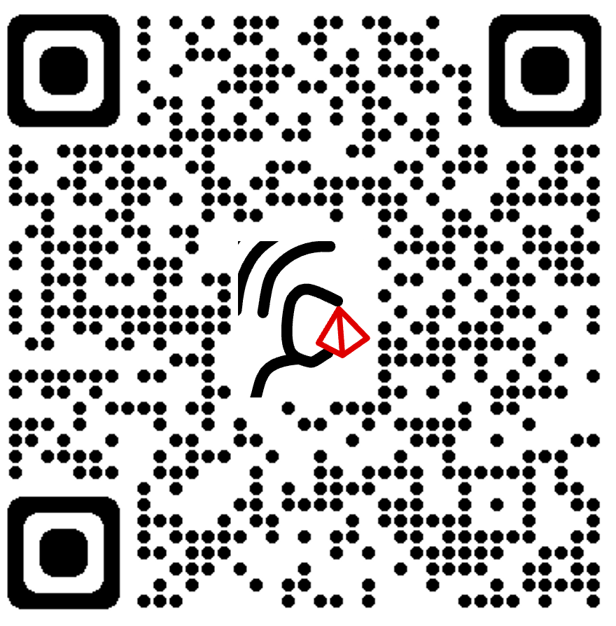

os widgets podem ser adicionados no AVA como links, em fóruns ou qualquer plataforma on-line.
para adicionar o widget em uma apresentação do PowerPoint recomendamos o Add-in Web Viewer. Uma vez instalada a extensão, vá para a aba "Inserir" e clique no botão "Meus Add-ins", selecione o "Web Viewer". Uma caixa branca será adicionada, lá insira o seguinte link:
murilohmoreira.github.io/host_widgets/crystal_widget_app.html
caso tenha dúvidas, cheque o este tutorial, ou fique a vontade para entrar em contato!
adicionalmente, é sugerido colocar também o QRcode abaixo para que os alunos também possam acessar e interagir com o widget.
